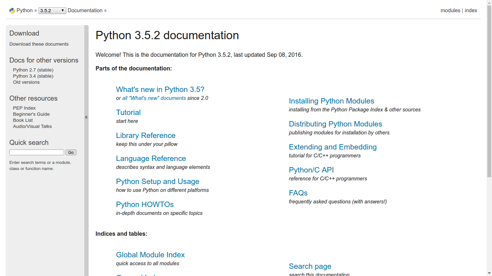
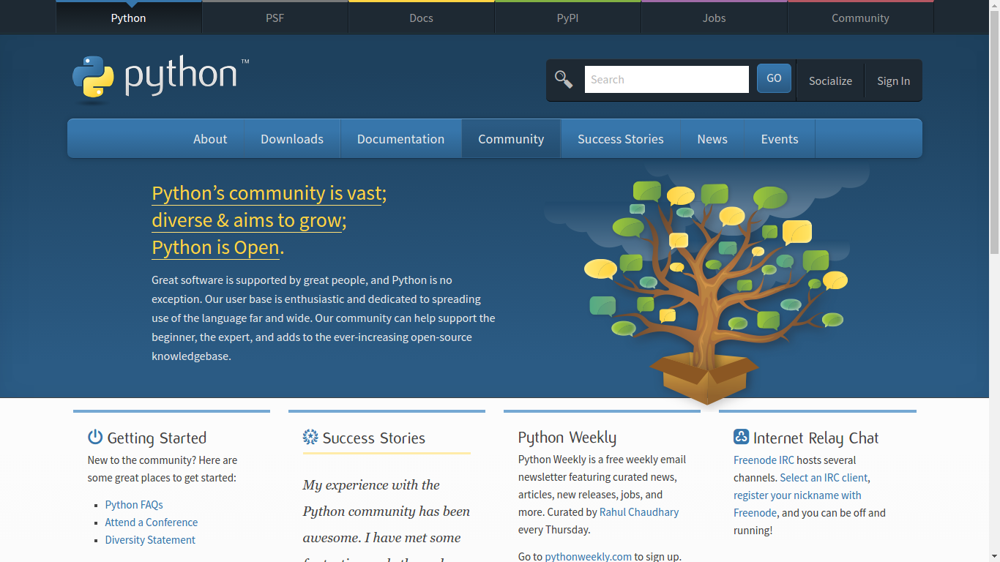
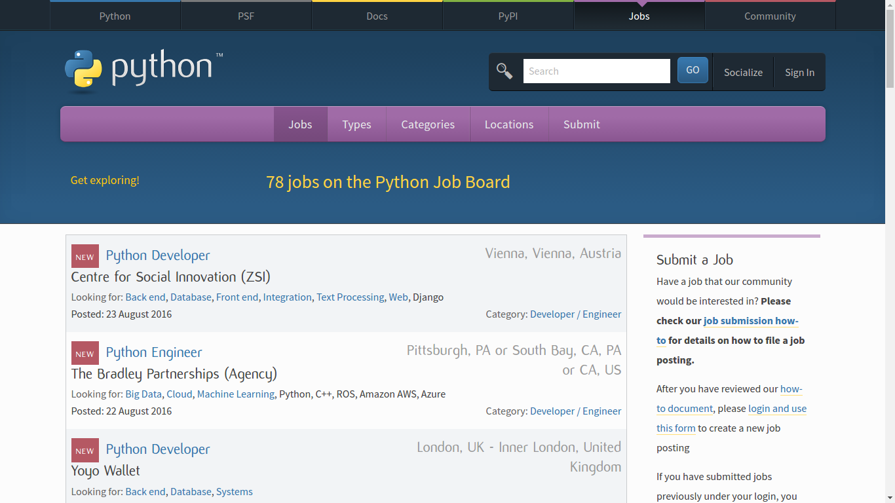
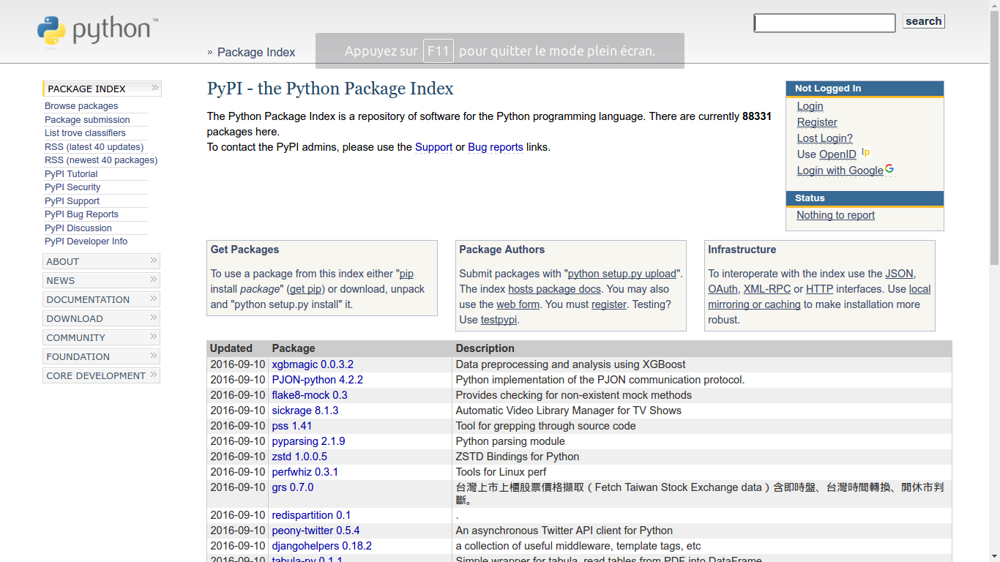

Passez votre souris sur les images. Cliquer au centre pour visiter
Cliquez ici
Une documentation complète qui permet d'avoir toutes les informations dont vous pourriez avoir besoin.
Une communauté prête à vous aider que vous ayez un niveau débutant, intermidiaire ou même expert.
Une page consacrée aux jobs disponibles en Python partout dans le monde.
Une zone réservée aux paquets et modules Python afin d'améliorer l'expérience utilisateur.
